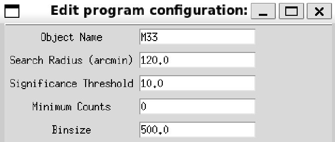

X-ray astronomy
Searching for Extragalactic Exoplanets, Eclipses, and Flares in the Triangulum Galaxy by means of X-ray Binaries
June 2024 – August 2024


Summary
Most known exoplanet candidates lie within a few thousand light-years of Earth. Dust and other intervening material scatter visible light, which limits how far those searches can reach. I instead searched X-ray binary systems, where the higher-energy emission propagates more readily through that material, for eclipses and flares that could indicate extragalactic exoplanets.
I wrote a program and interface for browsing Chandra X-ray Observatory catalogs of X-ray binaries, focused on the Triangulum Galaxy (M33), one of the most X-ray-active nearby galaxies. Across more than 1,000 catalogued sources, the search identified exoplanet candidates more than ten times farther than previous candidates.